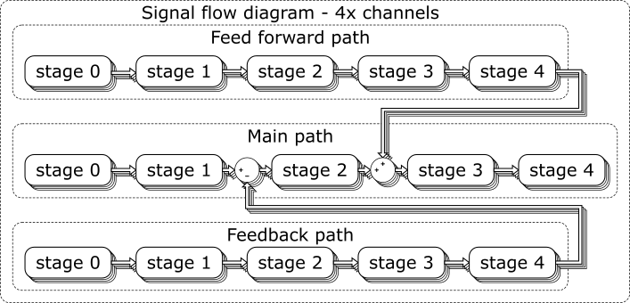
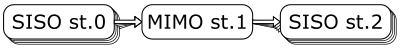

Signal Flow Structure
Signal flow is an application layer of ICC driver which is in charge of a device control.
It organises signal flow systems commonly named as stages into a control structure.
Control structure consists of signal flow paths, stages and channels.
Available signal Flow paths:
- main, default one, stand-alone represents open loop control
- feed forward, adding pre-proccessed feed forward signal to the main flow output conditioning stage
- feedback, subtracting pre-processed feedback output signal from sensors to main flow control stage
Main signal flow path consist of five dedicated stages:
- Input Stage, which generates the propagated value.
- Input Conditioning Stage, which can apply a transformation to the input.
- Control Stage, which defines how the output is controlled.
- Output Conditioning Stage, which can apply a transformation to the control stage output.
- Output Stage, which finally sends the propagated value to the actual device,
- Note
- Feed forward and feedback paths uses generic stages for signal processing.
By default (unless setup) those paths are not occupied with any system, i.e. they are producing zero output value.
-

| Fig.1: | Signal flow structure |
Described signal flow is multiplied by number of controlled channels, i.e. 4 channels within ICC-4C
Specific stages
For one-channel device control a default stage system is a SISO (Single Input Single Output). See Fig.1.
For multi-channel device control usage of MIMO stage (Multiple Input Multiple Output) might be applied. See Fig.2.

| Fig.2: | MIMO stage interaction |
MIMO stage is collecting output value of previous stages of all available channels,
processing it and distributing multiple stage output to next stages for all available channels.
- Note
- MIMO stage is a single stage system instance, shall occupy exclusively zero channel of particular signal flow stage.
-
For enabling feedback control a dedicated closed loop control stage system within stage 2 of main path has to be engaged.
The stage has a flag enabling to join a feedback path signal. It assumes processing of control error signal, e.g. PID bases control system.
- Note
- The feedback control capability of the closed loop control stage system is fixed by design and cannot be customized.
-
Channel Value
Value propagating through the signal flow stages has a float value and type associated with it (see Unit Type Unit Type "Channel Value").
- Note
- Not all combination of stage systems is valid.
If a system receives a value of a type which it cannot process, it will output zero.
-
Signal Flow manager
Modifying stage systems and general signal flow execution is in charge of Signal Flow Manager
Whole signal flow is executed within one sample period, i.e. input value is propagated through the signal flow stages, modified and forwarded right to the signal flow output.
A brief overview of available stage systems:
- Input Stage:
- Static Input, for constant values set by the user.
- Analog Input, for generating values by sampling the analog inputs of the driver.
- Signal Generator, a customisable generator of simple signals, such as a rectangular pulse, or a sine wave.
- Vector Pattern Unit, for repeating sets of values which can be saved to the non-volatile memory of the controller.
- Input Conditioning Stage:
- Control Stage:
- Open Loop, open loop control, to feed unchanged current values forward to the output.
- Lens compensation, open loop control, compensating lens focal power thermal dependency.
- Feedback PID, closed loop control, for PID control driven by optical feedback.
- Calibrated PID, closed loop control, for PID control driven by XY coordinates.
- Attention
- If unit of input stage does not match with the selected control stage unit, 0 is propagated to the output as default.
- Output Conditioning Stage:
- Output Stage:
- Linear Output, currently the only available Output stage system, which sets after checking the value it receives to an appropriate DAC.
- Note
- See the default values of the Signal Flow Manager registers for the default configuration of the signal flow.